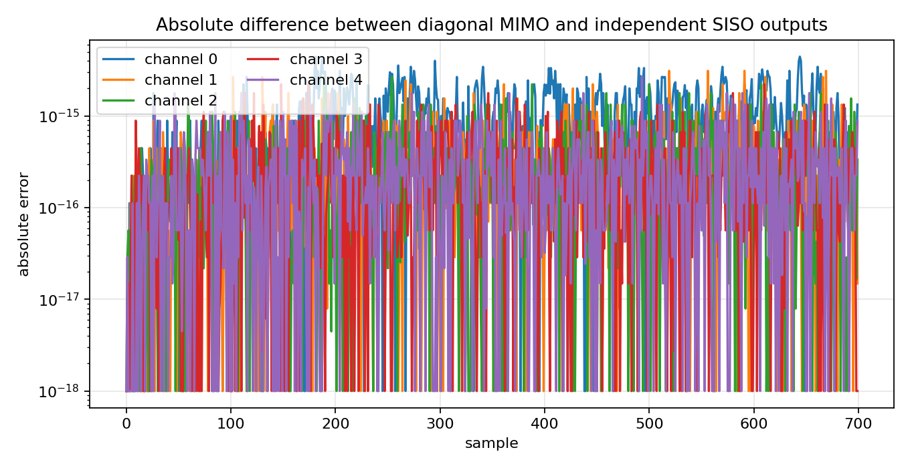
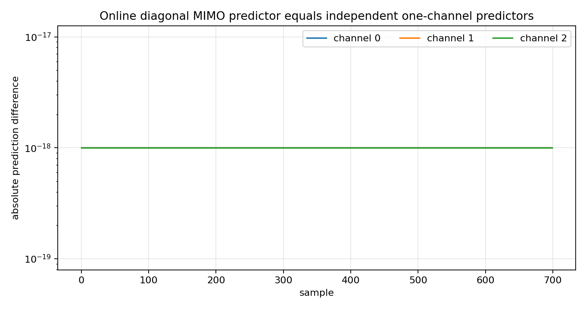
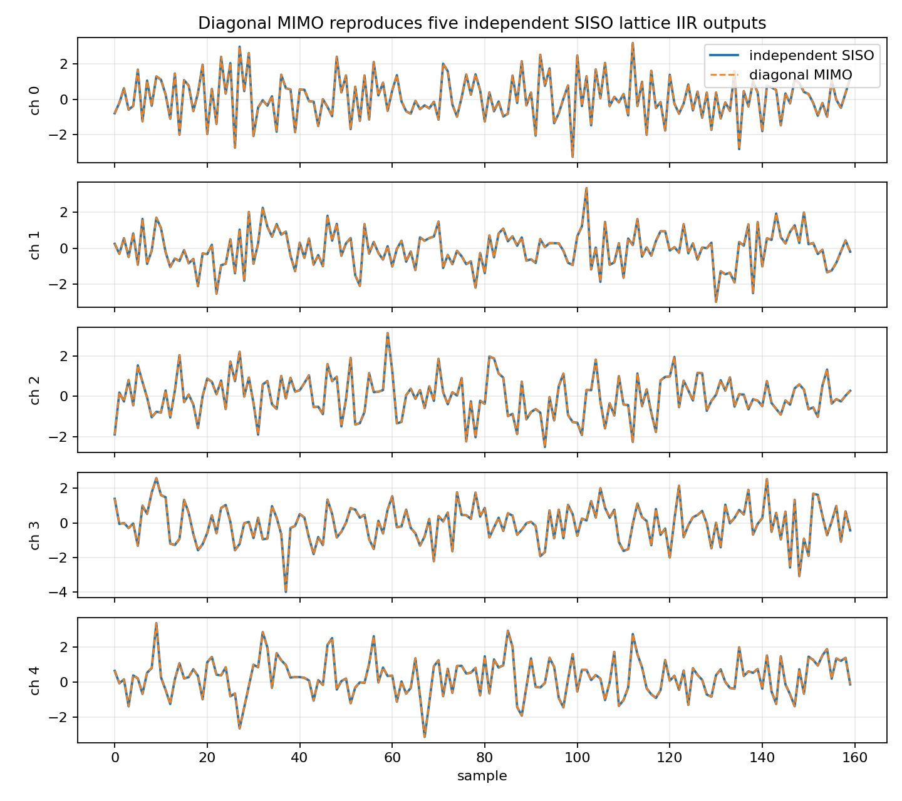

Diagonal MIMO equals independent SISO¶
Tutorial goal
Use independent SISO lattice filters and online predictors as sanity checks for diagonal MIMO.
Note
New to the terminology? See the lattice DSP concept map and the causality/data-use guide for how online, offline, block, and MIMO examples should be read.
Context¶
Before studying coupled MIMO lattice systems, it helps to inspect the diagonal case. If every matrix Markov parameter or matrix reflection coefficient is diagonal, no output channel depends on any other input channel. The MIMO system is exactly several scalar SISO systems running side by side.
This is the intuition bridge between scalar lattice filters and matrix-valued MIMO filters: scalar reflection coefficients become diagonal entries first, and only later become genuinely coupled matrices.
Key idea and equations¶
A diagonal MIMO impulse response has Markov matrices
and therefore a diagonal transfer matrix
The convolution separates by channel:
The same diagonal reduction should hold for the online lattice predictor. If the matrix reflection coefficients are diagonal,
then the vector recursion decouples into independent one-channel recursions:
This is the algebraic reason the diagonal MIMO result must match running scalar SISO filters or one-channel online lattice predictors independently. Any nonzero off-diagonal Markov block or reflection entry would create true channel coupling.
Causality and data use¶
The scalar LatticeIIR filters and the online MIMOLatticePredictor comparison are causal. The Markov-convolution part is evaluated on a stored array as a validation check, but each output sample uses only lags x[n-k]. The online predictor part explicitly calls predict() before update(y_n) and therefore uses only previous samples when forming \widehat y[n].
What this example verifies¶
This is the reduction-to-SISO sanity check. It verifies that when the MIMO
Markov matrices or matrix reflections are diagonal, the multichannel object
decomposes into independent scalar systems. The expected diagnostic is
roundoff-level agreement between the MIMO result and stacked SISO results,
including the online predict()/update() predictor path.
How to read the result¶
The MIMO/SISO differences should be near numerical precision for both the finite impulse-response comparison and the online predict-before-update comparison.
Run command¶
python examples/mimo_diagonal_equals_independent_siso.py
Run status¶
Return code: 0
Captured stdout¶
channels: 5
samples: 700
impulse truncation length: 160
off-diagonal Markov energy: 0.000e+00
diagonal Markov energy: 5.389e+00
max |MIMO output - independent SISO output|: 4.441e-15
RMS error: 7.699e-16
online predictor channels: 3
max |online diagonal MIMO prediction - independent SISO prediction|: 0.000e+00
max |online diagonal MIMO error - independent SISO error|: 0.000e+00
Figures¶
{kind=link}

mimo_diagonal_error.png¶
{kind=link}

mimo_diagonal_online_prediction_error.png¶
{kind=link}

mimo_diagonal_outputs.png¶
Generated data files¶
Source code¶
1"""Tutorial: diagonal MIMO equals independent SISO filters.
2
3A useful sanity check for MIMO DSP is the diagonal case. If every matrix
4Markov parameter or reflection matrix is diagonal, the MIMO system does not mix
5channels; it is just several scalar SISO systems running side by side.
6
7This tutorial performs two checks:
8
9* five stable SISO lattice IIR filters are placed on the diagonal of a MIMO
10 Markov sequence and compared with independent SISO filtering; and
11* a three-channel online MIMO lattice predictor with diagonal reflection
12 matrices is compared sample-by-sample with three independent one-channel
13 online lattice predictors.
14"""
15
16from __future__ import annotations
17
18import csv
19import os
20from pathlib import Path
21
22import numpy as np
23
24import lattice_dsp as ld
25
26
27def artifact_dir() -> Path:
28 path = Path(os.environ.get("LATTICE_DSP_ARTIFACT_DIR", "reports/example-artifacts"))
29 path.mkdir(parents=True, exist_ok=True)
30 return path
31
32
33def diagonal_markov_from_siso(filters: list[tuple[np.ndarray, np.ndarray]], n_impulse: int) -> np.ndarray:
34 channels = len(filters)
35 markov = np.zeros((n_impulse, channels, channels), dtype=float)
36 for ch, (reflection, numerator) in enumerate(filters):
37 denominator = ld.reflection_to_denominator(reflection.tolist())
38 h = ld.iir_impulse_response(denominator, numerator.tolist(), n_impulse)
39 markov[:, ch, ch] = np.asarray(h, dtype=float)
40 return markov
41
42
43def mimo_convolve(markov: np.ndarray, x: np.ndarray) -> np.ndarray:
44 samples, inputs = x.shape
45 _, outputs, markov_inputs = markov.shape
46 if inputs != markov_inputs:
47 raise ValueError("input dimension does not match Markov parameters")
48 y = np.zeros((samples, outputs), dtype=float)
49 horizon = markov.shape[0]
50 for n in range(samples):
51 max_lag = min(horizon, n + 1)
52 for lag in range(max_lag):
53 y[n] += markov[lag] @ x[n - lag]
54 return y
55
56
57def online_mimo_vs_independent_siso(
58 x: np.ndarray,
59 forward_scalars: np.ndarray,
60 backward_scalars: np.ndarray,
61) -> tuple[np.ndarray, np.ndarray, np.ndarray, np.ndarray]:
62 """Compare a diagonal online MIMO lattice with independent one-channel predictors."""
63
64 kf = np.asarray([np.diag(row) for row in forward_scalars], dtype=float)
65 kb = np.asarray([np.diag(row) for row in backward_scalars], dtype=float)
66 mimo = ld.MIMOLatticePredictor(kf, kb)
67 siso = [
68 ld.MIMOLatticePredictor(
69 forward_scalars[:, ch].reshape(-1, 1, 1),
70 backward_scalars[:, ch].reshape(-1, 1, 1),
71 )
72 for ch in range(x.shape[1])
73 ]
74
75 prediction_mimo = np.empty_like(x, dtype=float)
76 prediction_siso = np.empty_like(x, dtype=float)
77 error_mimo = np.empty_like(x, dtype=float)
78 error_siso = np.empty_like(x, dtype=float)
79
80 for n, sample in enumerate(x):
81 # The prediction is intentionally requested before the current sample is
82 # passed into update(). This is the causal one-step prediction contract.
83 prediction_mimo[n] = mimo.predict().real
84 error_mimo[n] = mimo.update(sample).real
85 for ch, predictor in enumerate(siso):
86 prediction_siso[n, ch] = predictor.predict()[0].real
87 error_siso[n, ch] = predictor.update(np.array([sample[ch]]))[0].real
88
89 return prediction_mimo, prediction_siso, error_mimo, error_siso
90
91
92def main() -> None:
93 out_dir = artifact_dir()
94 rng = np.random.default_rng(2026)
95
96 channels = 5
97 samples = 700
98 n_impulse = 160
99
100 # Five different stable SISO lattice IIR filters. Each channel has its own
101 # reflection coefficients and numerator, but there is no cross-channel mixing.
102 filters: list[tuple[np.ndarray, np.ndarray]] = []
103 for ch in range(channels):
104 scale = 0.58 - 0.04 * ch
105 reflection = scale * np.array([0.55, -0.42, 0.28, -0.16], dtype=float)
106 numerator = np.array([1.0, 0.08 * (ch + 1), -0.04, 0.015, 0.0], dtype=float)
107 filters.append((reflection, numerator))
108
109 x = rng.normal(size=(samples, channels))
110 siso_y = np.zeros_like(x)
111 for ch, (reflection, numerator) in enumerate(filters):
112 filt = ld.LatticeIIR(reflection.tolist(), numerator.tolist())
113 siso_y[:, ch] = filt.process(x[:, ch])
114
115 markov = diagonal_markov_from_siso(filters, n_impulse=n_impulse)
116 mimo_y = mimo_convolve(markov, x)
117
118 # Ignore the very end of the impulse truncation error by using a long enough
119 # impulse response. With these stable filters, the residual is near roundoff.
120 error = mimo_y - siso_y
121 max_abs_error = float(np.max(np.abs(error)))
122 rms_error = float(np.sqrt(np.mean(error**2)))
123 off_diagonal_energy = float(np.sum(markov[:, ~np.eye(channels, dtype=bool)] ** 2))
124 diagonal_energy = float(np.sum(markov[:, np.eye(channels, dtype=bool)] ** 2))
125
126 rows = []
127 for ch in range(channels):
128 rows.append(
129 {
130 "channel": ch,
131 "max_abs_error": float(np.max(np.abs(error[:, ch]))),
132 "rms_error": float(np.sqrt(np.mean(error[:, ch] ** 2))),
133 "max_abs_reflection": float(np.max(np.abs(filters[ch][0]))),
134 }
135 )
136
137 csv_path = out_dir / "mimo_diagonal_equals_independent_siso_summary.csv"
138 with csv_path.open("w", newline="", encoding="utf-8") as f:
139 writer = csv.DictWriter(f, fieldnames=list(rows[0]))
140 writer.writeheader()
141 writer.writerows(rows)
142
143 online_channels = 3
144 online_x = rng.normal(size=(samples, online_channels))
145 forward_scalars = np.array(
146 [
147 [0.18, -0.12, 0.07],
148 [-0.05, 0.03, -0.02],
149 [0.015, -0.01, 0.012],
150 ],
151 dtype=float,
152 )
153 backward_scalars = np.array(
154 [
155 [0.16, -0.10, 0.06],
156 [-0.04, 0.02, -0.01],
157 [0.012, -0.008, 0.010],
158 ],
159 dtype=float,
160 )
161 pred_mimo, pred_siso, err_mimo, err_siso = online_mimo_vs_independent_siso(
162 online_x,
163 forward_scalars,
164 backward_scalars,
165 )
166 online_prediction_diff = pred_mimo - pred_siso
167 online_error_diff = err_mimo - err_siso
168 max_online_prediction_diff = float(np.max(np.abs(online_prediction_diff)))
169 max_online_error_diff = float(np.max(np.abs(online_error_diff)))
170
171 online_rows = []
172 for ch in range(online_channels):
173 online_rows.append(
174 {
175 "channel": ch,
176 "max_abs_prediction_difference": float(np.max(np.abs(online_prediction_diff[:, ch]))),
177 "max_abs_error_difference": float(np.max(np.abs(online_error_diff[:, ch]))),
178 "max_abs_forward_reflection": float(np.max(np.abs(forward_scalars[:, ch]))),
179 "max_abs_backward_reflection": float(np.max(np.abs(backward_scalars[:, ch]))),
180 }
181 )
182
183 online_csv_path = out_dir / "mimo_diagonal_online_predictor_summary.csv"
184 with online_csv_path.open("w", newline="", encoding="utf-8") as f:
185 writer = csv.DictWriter(f, fieldnames=list(online_rows[0]))
186 writer.writeheader()
187 writer.writerows(online_rows)
188
189 print("channels:", channels)
190 print("samples:", samples)
191 print("impulse truncation length:", n_impulse)
192 print("off-diagonal Markov energy:", f"{off_diagonal_energy:.3e}")
193 print("diagonal Markov energy:", f"{diagonal_energy:.3e}")
194 print("max |MIMO output - independent SISO output|:", f"{max_abs_error:.3e}")
195 print("RMS error:", f"{rms_error:.3e}")
196 print("online predictor channels:", online_channels)
197 print(
198 "max |online diagonal MIMO prediction - independent SISO prediction|:",
199 f"{max_online_prediction_diff:.3e}",
200 )
201 print("max |online diagonal MIMO error - independent SISO error|:", f"{max_online_error_diff:.3e}")
202 print(f"wrote {csv_path}")
203 print(f"wrote {online_csv_path}")
204
205 try:
206 import matplotlib.pyplot as plt
207 except Exception:
208 print("matplotlib is not installed; skipped figures")
209 return
210
211 t = np.arange(160)
212 fig, axes = plt.subplots(channels, 1, figsize=(9, 8), sharex=True)
213 for ch, ax in enumerate(axes):
214 ax.plot(t, siso_y[: t.size, ch], label="independent SISO", linewidth=1.7)
215 ax.plot(t, mimo_y[: t.size, ch], "--", label="diagonal MIMO", linewidth=1.2)
216 ax.set_ylabel(f"ch {ch}")
217 ax.grid(True, alpha=0.25)
218 axes[0].set_title("Diagonal MIMO reproduces five independent SISO lattice IIR outputs")
219 axes[-1].set_xlabel("sample")
220 axes[0].legend(loc="upper right")
221 fig.tight_layout()
222 fig_path = out_dir / "mimo_diagonal_outputs.png"
223 fig.savefig(fig_path, dpi=160)
224 print(f"wrote {fig_path}")
225
226 fig2, ax2 = plt.subplots(figsize=(8.5, 4.4))
227 for ch in range(channels):
228 ax2.semilogy(np.abs(error[:, ch]) + 1e-18, label=f"channel {ch}")
229 ax2.set_title("Absolute difference between diagonal MIMO and independent SISO outputs")
230 ax2.set_xlabel("sample")
231 ax2.set_ylabel("absolute error")
232 ax2.grid(True, alpha=0.3)
233 ax2.legend(ncol=2)
234 fig2.tight_layout()
235 fig2_path = out_dir / "mimo_diagonal_error.png"
236 fig2.savefig(fig2_path, dpi=160)
237 print(f"wrote {fig2_path}")
238
239 fig3, ax3 = plt.subplots(figsize=(8.5, 4.5))
240 for ch in range(online_channels):
241 ax3.semilogy(np.abs(online_prediction_diff[:, ch]) + 1e-18, label=f"channel {ch}")
242 ax3.set_title("Online diagonal MIMO predictor equals independent one-channel predictors")
243 ax3.set_xlabel("sample")
244 ax3.set_ylabel("absolute prediction difference")
245 ax3.grid(True, alpha=0.3)
246 ax3.legend(ncol=online_channels)
247 fig3.tight_layout()
248 fig3_path = out_dir / "mimo_diagonal_online_prediction_error.png"
249 fig3.savefig(fig3_path, dpi=160)
250 print(f"wrote {fig3_path}")
251
252
253if __name__ == "__main__":
254 main()